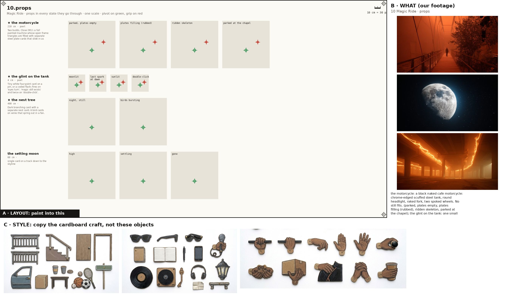
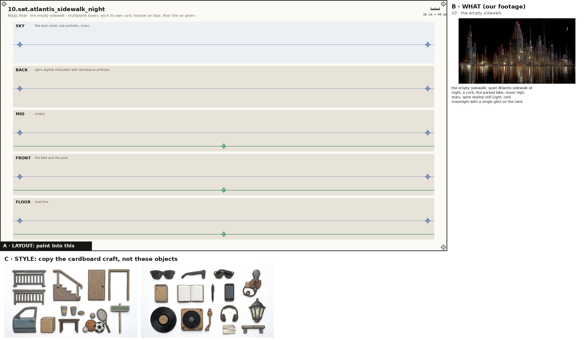
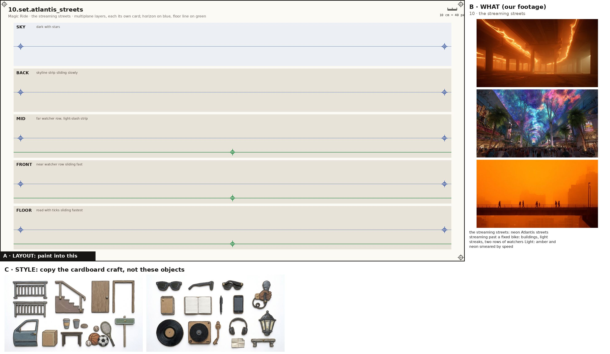
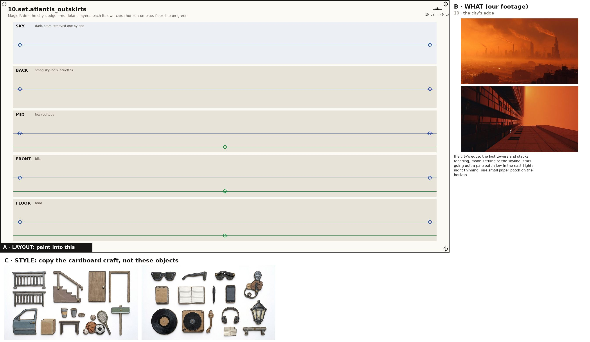
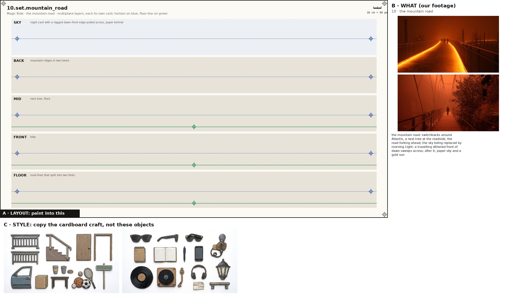
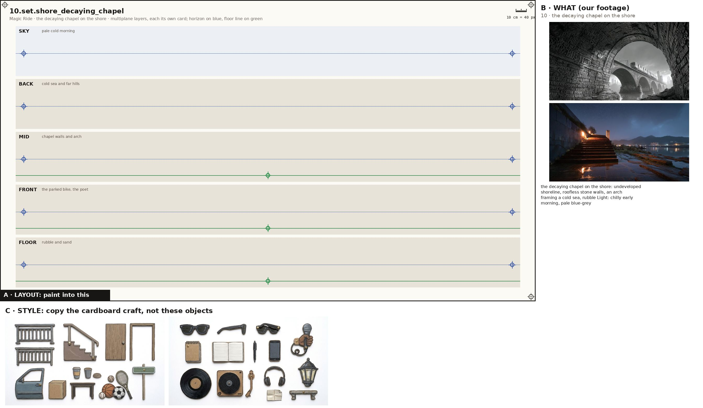
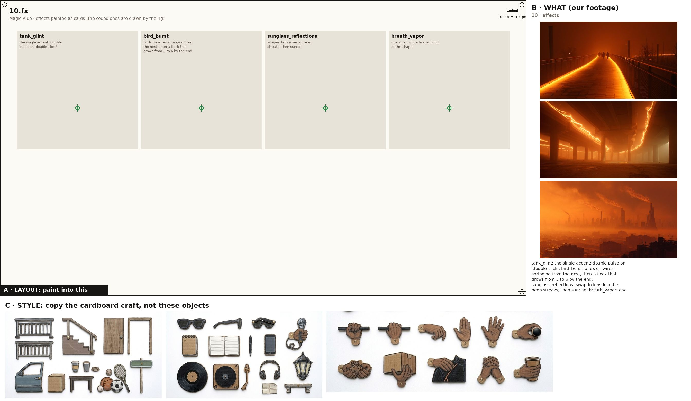

One image + one prompt each. The characters' action sheets are in the cast above; their costume kits are on the character kits page.

Props, every state props
Paint one sheet of cut-out puppet parts for a paper-puppet film, using the attached image. Panel A is the exact layout, panel B is our footage for these props (reference: copy the object, not the photo style), panel C is the style. STYLE (panel C): flat cards cut from corrugated cardboard, gouache with confident ink linework, the flutes faintly showing through the paint, a thin raw kraft-brown cut edge round every card, brass split-pin brads; shot flat-on, even light, no shadows, no perspective. Copy the craft from C, not the clothes in it. WHAT (panel B): the props of the poem 'Magic Ride', one row each, every state of a prop in its own cell, left to right: the motorcycle: a black naked cafe motorcycle: chrome-edged scuffed steel tank, round headlight, raked fork, two spoked wheels. No still fits. (parked, plates empty, plates filling (rubbed), ridden skeleton, parked at the chapel); the glint on the tank: one small white star of light on the tank, the poem's only accent. No still fits. (moonlit, last spark at dawn, sunlit, double-click); the nest tree: a lone roadside tree with a twig nest in a fork; birds burst out as the bike passes (night, still, birds bursting); the setting moon: the same cream disc as 09, shrinking a little as it settles to the skyline (high, settling, gone); the morning sun: a pale gold disc with soft rays, low in the east. No still fits. (rising, up); traffic streaks: other cars and scooters only as headlight and taillight streaks (streaming). Paint each state as a flat cardboard prop card at the size its cell gives, the same object across its row; a brass brad on the green cross (its pivot); where there is a red cross, that is where a hand grips it. LAYOUT (panel A): paint one card inside each grey ghost, in the same place, size and angle, inside its dashed outline; a brass brad exactly on every green cross; each red cross must fall inside that card's rounded end. NEVER draw a pelvis, hip, shorts or briefs card (the thighs end in a rounded seat that tucks under the hem), a sleeveless vest, lace-up boots, or sunglasses painted onto a head. OUTPUT: only the painted cards on a pure white 2048x1152 sheet laid out as panel A. Leave out panels B and C, the crosses, labels, ruler, dashed lines and ghosts.

the empty sidewalk set
Paint one sheet of cut-out puppet parts for a paper-puppet film, using the attached image. Panel A is the exact layout, panel B is our footage for this place (reference: copy the place, not the photo style), panel C is the style. STYLE (panel C): flat cards cut from corrugated cardboard, gouache with confident ink linework, the flutes faintly showing through the paint, a thin raw kraft-brown cut edge round every card, brass split-pin brads; shot flat-on, even light, no shadows, no perspective. Copy the craft from C, not the clothes in it. WHAT (panel B): the empty sidewalk: quiet Atlantis sidewalk at night, a curb, the parked bike, moon high, stars, spire skyline still Light: cold moonlight with a single glint on the tank. SHEET: the place as five separate flat cardboard layers, one per band, painted to stack front to back in a multiplane rig: SKY: flat dark violet, star pinholes, moon; BACK: spire skyline silhouette with red beacon pinholes; MID: empty; FRONT: the bike and the poet; FLOOR: road line. Each layer is its own card with a clean cut top edge and transparent gaps where the layer behind shows through; keep the horizon on the blue line and the floor on the green line in every band so they register. LAYOUT (panel A): paint one card inside each grey ghost, in the same place, size and angle, inside its dashed outline; a brass brad exactly on every green cross; each red cross must fall inside that card's rounded end. OUTPUT: only the painted cards on a pure white 2048x1152 sheet laid out as panel A. Leave out panels B and C, the crosses, labels, ruler, dashed lines and ghosts.

the streaming streets set
Paint one sheet of cut-out puppet parts for a paper-puppet film, using the attached image. Panel A is the exact layout, panel B is our footage for this place (reference: copy the place, not the photo style), panel C is the style. STYLE (panel C): flat cards cut from corrugated cardboard, gouache with confident ink linework, the flutes faintly showing through the paint, a thin raw kraft-brown cut edge round every card, brass split-pin brads; shot flat-on, even light, no shadows, no perspective. Copy the craft from C, not the clothes in it. WHAT (panel B): the streaming streets: neon Atlantis streets streaming past a fixed bike: buildings, light streaks, two rows of watchers Light: amber and neon smeared by speed. SHEET: the place as five separate flat cardboard layers, one per band, painted to stack front to back in a multiplane rig: SKY: dark with stars; BACK: skyline strip sliding slowly; MID: far watcher row, light-slash strip; FRONT: near watcher row sliding fast; FLOOR: road with ticks sliding fastest. Each layer is its own card with a clean cut top edge and transparent gaps where the layer behind shows through; keep the horizon on the blue line and the floor on the green line in every band so they register. LAYOUT (panel A): paint one card inside each grey ghost, in the same place, size and angle, inside its dashed outline; a brass brad exactly on every green cross; each red cross must fall inside that card's rounded end. OUTPUT: only the painted cards on a pure white 2048x1152 sheet laid out as panel A. Leave out panels B and C, the crosses, labels, ruler, dashed lines and ghosts.

the city's edge set
Paint one sheet of cut-out puppet parts for a paper-puppet film, using the attached image. Panel A is the exact layout, panel B is our footage for this place (reference: copy the place, not the photo style), panel C is the style. STYLE (panel C): flat cards cut from corrugated cardboard, gouache with confident ink linework, the flutes faintly showing through the paint, a thin raw kraft-brown cut edge round every card, brass split-pin brads; shot flat-on, even light, no shadows, no perspective. Copy the craft from C, not the clothes in it. WHAT (panel B): the city's edge: the last towers and stacks receding, moon settling to the skyline, stars going out, a pale patch low in the east Light: night thinning; one small paper patch on the horizon. SHEET: the place as five separate flat cardboard layers, one per band, painted to stack front to back in a multiplane rig: SKY: dark, stars removed one by one; BACK: smog skyline silhouettes; MID: low rooftops; FRONT: bike; FLOOR: road. Each layer is its own card with a clean cut top edge and transparent gaps where the layer behind shows through; keep the horizon on the blue line and the floor on the green line in every band so they register. LAYOUT (panel A): paint one card inside each grey ghost, in the same place, size and angle, inside its dashed outline; a brass brad exactly on every green cross; each red cross must fall inside that card's rounded end. OUTPUT: only the painted cards on a pure white 2048x1152 sheet laid out as panel A. Leave out panels B and C, the crosses, labels, ruler, dashed lines and ghosts.

the mountain road set
Paint one sheet of cut-out puppet parts for a paper-puppet film, using the attached image. Panel A is the exact layout, panel B is our footage for this place (reference: copy the place, not the photo style), panel C is the style. STYLE (panel C): flat cards cut from corrugated cardboard, gouache with confident ink linework, the flutes faintly showing through the paint, a thin raw kraft-brown cut edge round every card, brass split-pin brads; shot flat-on, even light, no shadows, no perspective. Copy the craft from C, not the clothes in it. WHAT (panel B): the mountain road: switchbacks around Atlantis, a nest tree at the roadside, the road forking ahead; the sky being replaced by morning Light: a travelling dithered front of dawn sweeps across; after it, paper sky and a gold sun. SHEET: the place as five separate flat cardboard layers, one per band, painted to stack front to back in a multiplane rig: SKY: night card with a ragged dawn-front edge pulled across, paper behind; BACK: mountain ridges in two tones; MID: nest tree, flock; FRONT: bike; FLOOR: road lines that split into two forks. Each layer is its own card with a clean cut top edge and transparent gaps where the layer behind shows through; keep the horizon on the blue line and the floor on the green line in every band so they register. LAYOUT (panel A): paint one card inside each grey ghost, in the same place, size and angle, inside its dashed outline; a brass brad exactly on every green cross; each red cross must fall inside that card's rounded end. OUTPUT: only the painted cards on a pure white 2048x1152 sheet laid out as panel A. Leave out panels B and C, the crosses, labels, ruler, dashed lines and ghosts.

the decaying chapel on the shore set
Paint one sheet of cut-out puppet parts for a paper-puppet film, using the attached image. Panel A is the exact layout, panel B is our footage for this place (reference: copy the place, not the photo style), panel C is the style. STYLE (panel C): flat cards cut from corrugated cardboard, gouache with confident ink linework, the flutes faintly showing through the paint, a thin raw kraft-brown cut edge round every card, brass split-pin brads; shot flat-on, even light, no shadows, no perspective. Copy the craft from C, not the clothes in it. WHAT (panel B): the decaying chapel on the shore: undeveloped shoreline, roofless stone walls, an arch framing a cold sea, rubble Light: chilly early morning, pale blue-grey. SHEET: the place as five separate flat cardboard layers, one per band, painted to stack front to back in a multiplane rig: SKY: pale cold morning; BACK: cold sea and far hills; MID: chapel walls and arch; FRONT: the parked bike, the poet; FLOOR: rubble and sand. Each layer is its own card with a clean cut top edge and transparent gaps where the layer behind shows through; keep the horizon on the blue line and the floor on the green line in every band so they register. LAYOUT (panel A): paint one card inside each grey ghost, in the same place, size and angle, inside its dashed outline; a brass brad exactly on every green cross; each red cross must fall inside that card's rounded end. OUTPUT: only the painted cards on a pure white 2048x1152 sheet laid out as panel A. Leave out panels B and C, the crosses, labels, ruler, dashed lines and ghosts.

Painted effects fx
Paint one sheet of cut-out puppet parts for a paper-puppet film, using the attached image. Panel A is the exact layout, panel B is our footage for the mood, panel C is the style. STYLE (panel C): flat cards cut from corrugated cardboard, gouache with confident ink linework, the flutes faintly showing through the paint, a thin raw kraft-brown cut edge round every card, brass split-pin brads; shot flat-on, even light, no shadows, no perspective. Copy the craft from C, not the clothes in it. WHAT: the poem's painted effects, one per cell, as flat cardboard cards that a cut-out film moves in front of the camera: tank_glint: the single accent; double pulse on 'double-click'; bird_burst: birds on wires springing from the nest, then a flock that grows from 3 to 6 by the end; sunglass_reflections: swap-in lens inserts: neon streaks, then sunrise; breath_vapor: one small white tissue cloud at the chapel. A brass brad on the green cross of each. LAYOUT (panel A): paint one card inside each grey ghost, in the same place, size and angle, inside its dashed outline; a brass brad exactly on every green cross; each red cross must fall inside that card's rounded end. NEVER draw a pelvis, hip, shorts or briefs card (the thighs end in a rounded seat that tucks under the hem), a sleeveless vest, lace-up boots, or sunglasses painted onto a head. OUTPUT: only the painted cards on a pure white 2048x1152 sheet laid out as panel A. Leave out panels B and C, the crosses, labels, ruler, dashed lines and ghosts.